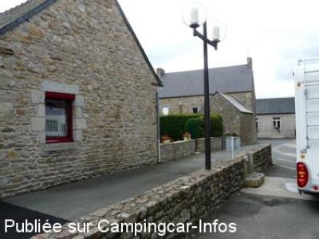
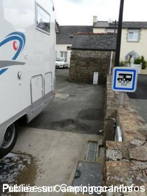
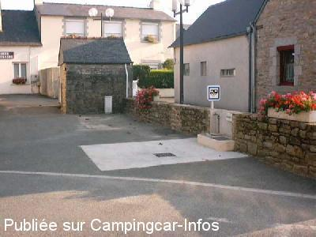
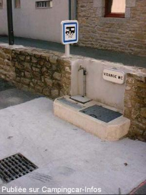

ASN = Aire de services avec stationnement nuit possible de :
PLOEUC SUR LIÉ
(N° 408)
Accès/adresse :
Rue des Ecoles
22150 PLOEUC SUR LIÉ
22150 PLOEUC SUR LIÉ
Latitude : (Nord) 48.34735° Décimaux ou 48° 20′ 50′′
Longitude : (Ouest) -2.75333° Décimaux ou -2° 45′ 11′′
Tarif : Gratuit
Type de borne : Artisanale
Services :


Tous commerces
Autres informations :
A proximité de l'église.

Le 02/05/2009 par PhilR-

Le 02/05/2009 par PhilR

Le 31/08/2003 par Gégé77

Le 31/08/2003 par Gégé77
de
Philippe60
le 27/08/2009 :
Aire artisanale et gratuite, très bien entretenue, stationnement derrière l'église, commerçants à proximité. Merçi à la municipalité.
Aire artisanale et gratuite, très bien entretenue, stationnement derrière l'église, commerçants à proximité. Merçi à la municipalité.
de
YVETTE BOUGARD
le 08/08/2005 :
Borne artisanale mais très propre. Nuit sur parking derrière l'église mais attention aux cloches à 7 heures du matin.
Borne artisanale mais très propre. Nuit sur parking derrière l'église mais attention aux cloches à 7 heures du matin.